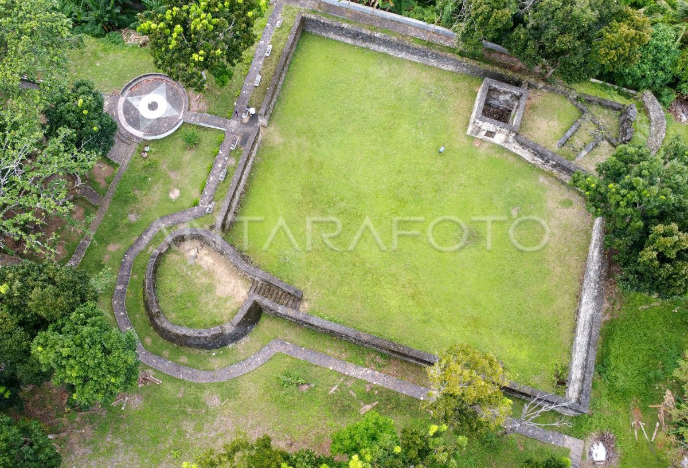
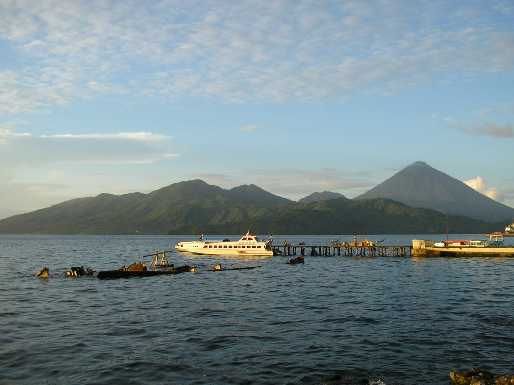
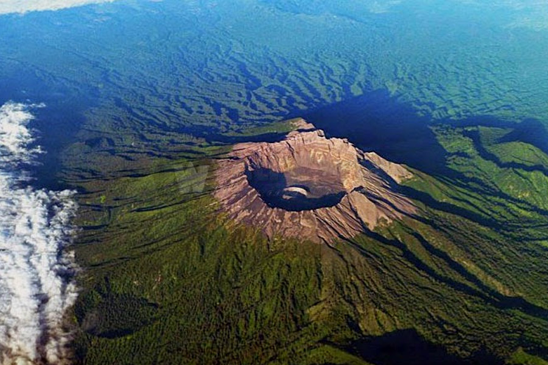

Tempat Wisata Populer
1. Pantai Sulamadaha

Pantai Sulamadaha adalah salah satu destinasi wisata alam yang terkenal di Ternate, Maluku Utara. Tempat ini menawarkan pemandangan laut yang indah dengan air yang jernih serta suasana yang tenang.
- Harga Tiket: Rp 5.000 - Rp 10.000 per orang
- Lokasi: Terletak sekitar 10 km dari pusat kota Ternate.
2. Benteng Orange

Benteng Orange Ternate adalah situs bersejarah yang dibangun oleh Belanda pada abad ke-17 dan menjadi landmark penting di kota Ternate. Benteng ini menawarkan pemandangan laut yang indah dan suasana yang tenang.
- Harga Tiket: Gratis
- Lokasi: Dapat dicapai dalam 10-15 menit dari pusat kota Ternate.
3. Kota Tidore

Kota Tidore terkenal dengan kekayaan sejarah dan budaya, serta pemandangan alam yang memukau. Di sini terdapat banyak situs bersejarah dan pantai-pantai yang indah.
- Harga Tiket: Rp 50.000 - Rp 75.000 per orang
- Lokasi: Berada di depan Kota Ternate, Maluku Utara.
4. Gunung Gamalama

Gunung Gamalama adalah gunung berapi aktif dengan ketinggian 1.715 meter, yang menjadi tujuan populer bagi para pendaki.
- Harga Tiket: Rp 75.000 (Weekday) - Rp 100.000 (Weekend) per orang
- Lokasi: Dekat dengan Kota Ternate.